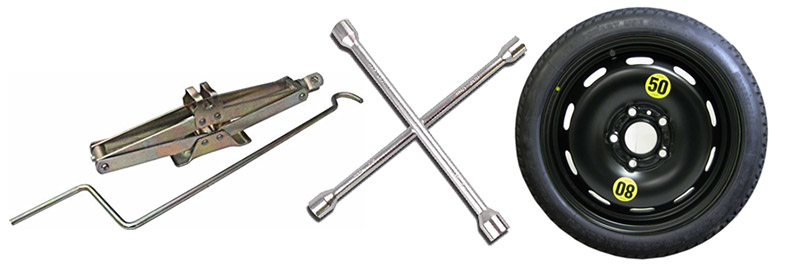

Go Back To Home Page
Here is the list of items which you need always for the fix of Flat Tire
1. Jack
2. Lug wrench
3. Fully inflated spare tire

Notes:-
It may also be useful to carry:
Torch – for working at night (check batteries regularly)
Gloves – wheels will be dirty
Reflective jacket – to make you visible
Warning triangle – to alert other drivers to a hazard/obstruction
Short plank of wood – as a flat surface to steady the jack
Tyre pressure gauge – for checking the new tyre is fully inflated